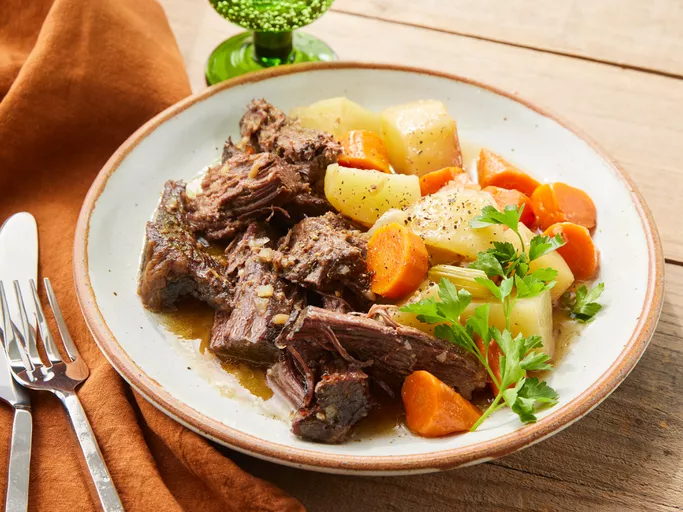

Home
Slow Cooker Pot Roast

Description
This slow cooker pot roast always turns out moist and juicy. It's cooked with carrots, onion, celery, and potatoes.
Ingredients
- 4 lbs chuck roast
- salt and pepper to taste
- 2 tbsp olive oil
- 1 packet dry onion soup mix
- 1 cup water
- 3 carrots, chopped
- 3 potatoes, peeled and cubed
- 1 onion, chopped
- 1 stalk celery
Directions
- Gather all ingredients
- Season chuck roast with salt and pepper
- Heat oil in a large skillet over high heat; add roast and sear to brown, about 4 minutes per side
- Place roast in the slow cooker and sprinke soup mix on top
- Add water, and scatter carrots, potatoes, onion, and celery on top
- Cover and cook on Low for 8 to 10 hours